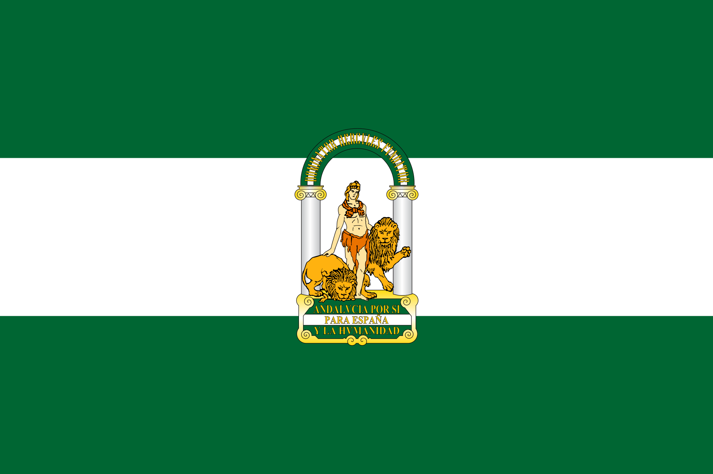

Andalucia
Andalusia (UK: /ˌændəˈluːsiə, -ziə/, US: /-ʒ(i)ə, -ʃ(i)ə/;[3][4][5] Spanish: Andalucía [andaluˈθi.a]) is the southernmost autonomous community in Peninsular Spain. It is the most populous and the second-largest autonomous community in the country. It is officially recognised as a "historical nationality".[6] The territory is divided into eight provinces: Almería, Cádiz, Córdoba, Granada, Huelva, Jaén, Málaga, and Seville. Its capital city is Seville. The seat of the High Court of Justice of Andalusia is located in the city of Granada.
Andalusia is located in the south of the Iberian Peninsula, in southwestern Europe, immediately south of the autonomous communities of Extremadura and Castilla-La Mancha; west of the autonomous community of Murcia and the Mediterranean Sea; east of Portugal and the Atlantic Ocean; and north of the Mediterranean Sea and the Strait of Gibraltar. Andalusia is the only European region with both Mediterranean and Atlantic coastlines. The small British Overseas Territory of Gibraltar shares a 1.2 kilometres (3⁄4 mi) land border with the Andalusian portion of the province of Cádiz at the eastern end of the Strait of Gibraltar.
The main mountain ranges of Andalusia are the Sierra Morena and the Baetic System, consisting of the Subbaetic and Penibaetic Mountains, separated by the Intrabaetic Basin. In the north, the Sierra Morena separates Andalusia from the plains of Extremadura and Castile–La Mancha on Spain's Meseta Central. To the south, the geographic subregion of Upper Andalusia [es] lies mostly within the Baetic System, while Lower Andalusia [es] is in the Baetic Depression of the valley of the Guadalquivir.[7]
The name "Andalusia" is derived from the Arabic word Al-Andalus (الأندلس).[8] The toponym al-Andalus is first attested by inscriptions on coins minted in 716 by the new Muslim government of Iberia. These coins, called dinars, were inscribed in both Latin and Arabic.[9][10] The etymology of the name "al-Andalus" has traditionally been derived from the name of the Vandals. Since the 1980s, a number of proposals have challenged this contention. Halm, in 1989, derived the name from a Gothic term, *landahlauts,[11] and in 2002, Bossong suggested its derivation from a pre-Roman substrate.[12] The region's history and culture have been influenced by the Tartessos, Iberians, Phoenicians, Carthaginians, Greeks, Romans, Vandals, Visigoths, Byzantines, Berbers of North Africa, Jews, Romani, Arab Umayyads, and Moors. During the Islamic Golden Age, Córdoba surpassed Constantinople[13][14] to be Europe's biggest city, and became the capital of Al-Andalus and a prominent center of education and learning in the world, producing numerous philosophers and scientists.[15][16] The Castilian and other Christian North Iberian nationalities reconquered and settled the area in the latter phases of the Reconquista.
Andalusia has historically been an agricultural region, compared to the rest of Spain and the rest of Europe. Still, the growth of the community in the sectors of industry and services was above average in Spain and higher than many communities in the Eurozone. The region has a rich culture and a strong Spanish identity. Many cultural phenomena that are seen internationally as distinctively Spanish are largely or entirely Andalusian in origin. These include flamenco and, to a lesser extent, bullfighting and Hispano-Moorish architectural styles, both of which are also prevalent in some other regions of Spain. Andalusia's hinterland is the hottest area of Europe, with cities like Córdoba and Seville averaging above 36 °C (97 °F) in summer high temperatures. Late evening temperatures can sometimes stay around 35 °C (95 °F) until close to midnight, and daytime highs of over 40 °C (104 °F) are common. Seville also has the highest average annual temperature in mainland Spain and mainland Europe (19.2 °C, 66.6 °F), closely followed by Almería (19.1 °C, 66.4 °F).[17]
Name
 Main article: Name of Andalusia
Map of the Iberian peninsula dated 1770. The Kingdoms of Jaén, Córdoba and Seville are collectively referred to
under the name Andalucía, while the Kingdom of Granada appears under its individual name.
Its present form is derived from the Arabic name for Muslim Iberia, "Al-Andalus".[18][19][20] The etymology of
the name "Al-Andalus" is disputed,[12] and the extent of Iberian territory encompassed by the name has changed
over the centuries.[21]
The Spanish place name Andalucía (immediate source of the English Andalusia) was introduced into the Spanish
languages in the 13th century under the form el Andalucía.[22] The name was adopted to refer to those
territories still under Moorish rule, and generally south of Castilla Nueva and Valencia, and corresponding with
the former Roman province hitherto called Baetica in Latin sources. This was a Castilianization of
Al-Andalusiya, the adjectival form of the Arabic language al-Andalus, the name given by the Arabs to all of the
Iberian territories under Muslim rule from 711 to 1492. The etymology of al-Andalus is itself somewhat debated
(see al-Andalus), but in fact it entered the Arabic language before this area came under Moorish rule.
Like the Arabic term al-Andalus, in historical contexts the Spanish term Andalucía or the English term Andalusia
do not necessarily refer to the exact territory designated by these terms today. Initially, the term referred
exclusively to territories under Muslim control. Later, it was applied to some of the last Iberian territories
to be regained from the Muslims, though not always to exactly the same ones.[22] In the Estoria de España (also
known as the Primera Crónica General) of Alfonso X of Castile, written in the second half of the 13th century,
the term Andalucía is used with three different meanings:
As a literal translation of the Arabic al-Ándalus when Arabic texts are quoted.
To designate the territories the Christians had regained by that time in the Guadalquivir valley and in the
Kingdoms of Granada and Murcia. In a document from 1253, Alfonso X styled himself Rey de Castilla, León y de
toda Andalucía ("King of Castile, León and all of Andalusia").
To designate the territories the Christians had regained by that time in the Guadalquivir valley until that date
(the Kingdoms of Jaén, Córdoba and Seville – the Kingdom of Granada was incorporated in 1492). This was the most
common significance in the Late Middle Ages and Early modern period.[23]
From an administrative point of view, Granada remained separate for many years even after the completion of the
Reconquista[23] due, above all, to its emblematic character as the last territory regained, and as the seat of
the important Real Chancillería de Granada, a court of last resort. Still, the reconquest and repopulation of
Granada was accomplished largely by people from the three preexisting Christian kingdoms of Andalusia, and
Granada came to be considered a fourth kingdom of Andalusia.[24] The often-used expression "Four Kingdoms of
Andalusia" dates back in Spanish at least to the mid-18th century.[25][26]
Main article: Name of Andalusia
Map of the Iberian peninsula dated 1770. The Kingdoms of Jaén, Córdoba and Seville are collectively referred to
under the name Andalucía, while the Kingdom of Granada appears under its individual name.
Its present form is derived from the Arabic name for Muslim Iberia, "Al-Andalus".[18][19][20] The etymology of
the name "Al-Andalus" is disputed,[12] and the extent of Iberian territory encompassed by the name has changed
over the centuries.[21]
The Spanish place name Andalucía (immediate source of the English Andalusia) was introduced into the Spanish
languages in the 13th century under the form el Andalucía.[22] The name was adopted to refer to those
territories still under Moorish rule, and generally south of Castilla Nueva and Valencia, and corresponding with
the former Roman province hitherto called Baetica in Latin sources. This was a Castilianization of
Al-Andalusiya, the adjectival form of the Arabic language al-Andalus, the name given by the Arabs to all of the
Iberian territories under Muslim rule from 711 to 1492. The etymology of al-Andalus is itself somewhat debated
(see al-Andalus), but in fact it entered the Arabic language before this area came under Moorish rule.
Like the Arabic term al-Andalus, in historical contexts the Spanish term Andalucía or the English term Andalusia
do not necessarily refer to the exact territory designated by these terms today. Initially, the term referred
exclusively to territories under Muslim control. Later, it was applied to some of the last Iberian territories
to be regained from the Muslims, though not always to exactly the same ones.[22] In the Estoria de España (also
known as the Primera Crónica General) of Alfonso X of Castile, written in the second half of the 13th century,
the term Andalucía is used with three different meanings:
As a literal translation of the Arabic al-Ándalus when Arabic texts are quoted.
To designate the territories the Christians had regained by that time in the Guadalquivir valley and in the
Kingdoms of Granada and Murcia. In a document from 1253, Alfonso X styled himself Rey de Castilla, León y de
toda Andalucía ("King of Castile, León and all of Andalusia").
To designate the territories the Christians had regained by that time in the Guadalquivir valley until that date
(the Kingdoms of Jaén, Córdoba and Seville – the Kingdom of Granada was incorporated in 1492). This was the most
common significance in the Late Middle Ages and Early modern period.[23]
From an administrative point of view, Granada remained separate for many years even after the completion of the
Reconquista[23] due, above all, to its emblematic character as the last territory regained, and as the seat of
the important Real Chancillería de Granada, a court of last resort. Still, the reconquest and repopulation of
Granada was accomplished largely by people from the three preexisting Christian kingdoms of Andalusia, and
Granada came to be considered a fourth kingdom of Andalusia.[24] The often-used expression "Four Kingdoms of
Andalusia" dates back in Spanish at least to the mid-18th century.[25][26]
Symbols
Main articles: Emblem of Andalusia and Flag of Andalusia Portrait of Blas Infante, executed in azulejos, located on the avenue in Jerez de la Frontera named in his honour. The Andalusian emblem shows the figure of Hercules and two lions between the two pillars of Hercules that tradition situates on either side of the Strait of Gibraltar. An inscription below, superimposed on an image of the flag of Andalusia reads Andalucía por sí, para España y la Humanidad ("Andalusia for herself, Spain and Humanity"). Over the two columns is a semicircular arch in the colours of the flag of Andalusia, with the Latin words Dominator Hercules Fundator (Lord Hercules is the Founder) superimposed.[1] The official flag of Andalusia consists of three equal horizontal stripes, coloured green, white, and green respectively; the Andalusian coat of arms is superimposed on the central stripe.[27] Its design was overseen by Blas Infante[28] and approved in the Assembly of Ronda (a 1918 gathering of Andalusian nationalists at Ronda). Blas Infante considered these to have been the colours most used in regional symbols throughout the region's history. According to him, the green came in particular from the standard of the Umayyad Caliphate and represented the call for a gathering of the populace. The white symbolised pardon in the Almohad dynasty, interpreted in European heraldry as parliament or peace. Other writers have justified the colours differently, with some Andalusian nationalists referring to them as the Arbonaida, meaning white-and-green in Mozarabic, a Romance language that was spoken in the region in Muslim times. Nowadays, the Andalusian government states that the colours of the flag evoke the Andalusian landscape as well as values of purity and hope for the future.[27] 2:26 An instrumental version of the Andalusian anthem. The anthem of Andalusia was composed by José del Castillo Díaz (director of the Municipal Band of Seville, commonly known as Maestro Castillo) with lyrics by Blas Infante.[28] The music was inspired by Santo Dios, a popular religious song sung at harvest time by peasants and day labourers in the provinces of Málaga, Seville, and Huelva. Blas Infante brought the song to Maestro Castillo's attention; Maestro Castillo adapted and harmonized the traditional melody. The lyrics appeal to the Andalusians to mobilise and demand tierra y libertad ("land and liberty") by way of agrarian reform and a statute of autonomy within Spain. The Parliament of Andalusia voted unanimously in 1983 that the preamble to the Statute of Autonomy recognise Blas Infante as the Father of the Andalusian Nation (Padre de la Patria Andaluza),[29] which was reaffirmed in the reformed Statute of Autonomy submitted to popular referendum 18 February 2007. The preamble of the present 2007 Statute of Autonomy says that Article 2 of the present Spanish Constitution of 1978 recognises Andalusia as a nationality. Later, in its articulation, it speaks of Andalusia as a "historic nationality" (Spanish: nacionalidad histórica). It also cites the 1919 Andalusianist Manifesto of Córdoba describing Andalusia as a "national reality" (realidad nacional), but does not endorse that formulation. Article 1 of the earlier 1981 Statute of Autonomy defined it simply as a "nationality" (nacionalidad).[30] The national holiday, Andalusia Day, is celebrated on 28 February,[31] commemorating the 1980 autonomy referendum. In spite of this, nationalist groups celebrate the holiday on 4 December, commemorating the 1977 demonstrations to demand autonomy.[citation needed] The honorific title of Hijo Predilecto de Andalucía ("Favourite Son of Andalucia") is granted by the Autonomous Government of Andalusia to those whose exceptional merits benefited Andalusia, for work or achievements in natural, social, or political science. It is the highest distinction given by the Autonomous Community of Andalusia.[32]
Geography
The Sevillian historian Antonio Domínguez Ortiz wrote that: one must seek the essence of Andalusia in its geographic reality on the one hand, and on the other in the awareness of its inhabitants. From the geographic point of view, the whole of the southern lands is too vast and varied to be embraced as a single unit. In reality there are not two, but three Andalusias: the Sierra Morena, the Valley [of the Guadalquivir] and the [Cordillera] Penibética[33]
Location
Andalusia has a surface area of 87,597 square kilometres (33,821 sq mi), 17.3% of the territory of Spain. Andalusia alone is comparable in extent and in the variety of its terrain to any of several of the smaller European countries. To the east is the Mediterranean Sea; to the west Portugal and the Gulf of Cádiz (Atlantic Ocean); to the north the Sierra Morena constitutes the border with the Meseta Central; to the south, the self-governing[34] British overseas territory of Gibraltar and the Strait of Gibraltar separate it from Morocco.
Climate
Andalusia is home to the hottest and driest climates in Spain, with yearly average rainfall around 150 millimetres (5.9 in) in Cabo de Gata, as well as some of the wettest ones, with yearly average rainfall above 2,000 millimetres (79 in) in inland Cádiz.[36] In the west, weather systems sweeping in from the Atlantic ensure that it is relatively wet and humid in the winter, with some areas receiving copious amounts. Contrary to what many people think, as a whole, the region enjoys above-average yearly rainfall in the context of Spain.[37] Andalusia sits at a latitude between 36° and 38° 44' N, in the warm-temperate region. In general, it experiences a hot-summer Mediterranean climate, with dry summers influenced by the Azores High, but subject to occasional torrential rains and extremely hot temperatures.[35][38] In the winter, the tropical anticyclones move south, allowing cold polar fronts to penetrate the region. Still, within Andalusia there is considerable climatic variety. From the extensive coastal plains one may pass to the valley of the Guadalquivir, barely above sea level, then to the highest altitudes in the Iberian peninsula in the peaks of the Sierra Nevada. In a mere 50 km (31 mi) one can pass from the subtropical coast of the province of Granada to the snowy peaks of Mulhacén. Andalusia also includes both the dry Tabernas Desert in the province of Almería and the Sierra de Grazalema Natural Park in the province of Cádiz, which experiences Spain's greatest rainfall.[39][40][41][42] Annual rainfall in the Sierra de Grazalema has been measured as high as 4,346 millimetres (171.1 in) in 1963, the highest ever recorded for any location in Iberia.[43] Andalusia is also home to the driest place in continental Europe, the Cabo de Gata, with only 117 millimetres (4.6 in) of rain per year. In general, as one goes from west to east, away from the Atlantic, there is less precipitation.[43] "Wet Andalusia" includes most of the highest points in the region, above all the Sierra de Grazalema but also the Serranía de Ronda in western Málaga. The valley of the Guadalquivir has moderate rainfall. The Tabernas Desert in Almería, Europe's only true desert, has less than 75 days with any measurable precipitation, and some particular places in the desert have as few as 50 such days. Much of "dry Andalusia" has more than 300 sunny days a year. The average temperature in Andalusia throughout the year is over 16 °C (61 °F). Averages in the cities range from 15.1 °C (59.2 °F) in Baeza to 19.1 °C (66.4 °F) in Almería.[44] Much of the Guadalquivir valley and the Mediterranean coast has an average of about 18 °C (64 °F). The coldest month is January when Granada at the foot of the Sierra Nevada experiences an average temperature of 6.4 °C (43.5 °F). The hottest are July and August, with an average temperature of 28.5 °C (83.3 °F) for Andalusia as a whole. Córdoba is the hottest provincial capital, followed by Seville.[45] The Guadalquivir valley has experienced some of the highest temperatures recorded in Europe, with a maximum of 46.9 °C (116.4 °F) recorded at Córdoba (14 August 2021), and Seville.[46] The mountains of Granada and Jaén have the coldest temperatures in southern Iberia, but do not reach continental extremes (and, indeed are surpassed by some mountains in northern Spain). In the cold snap of January 2005, Santiago de la Espada (Jaén) experienced a temperature of −21 °C (−6 °F) and the ski resort at Sierra Nevada National Park—the southernmost ski resort in Europe—dropped to −18 °C (0 °F). Sierra Nevada Natural Park has Iberia's lowest average annual temperature, (3.9 °C or 39.0 °F at Pradollano) and its peaks remain snowy practically year-round.
Economy
Andalusia is traditionally an agricultural area, but the service sector (particularly tourism, retail sales, and transportation) now predominates. The once booming construction sector, hit hard by the 2009 recession, was also important to the region's economy. The industrial sector is less developed than most other regions in Spain. Between 2000 and 2006 economic growth per annum was 3.72%, one of the highest in the country. Still, according to the Spanish Instituto Nacional de Estadística (INE), the GDP per capita of Andalusia (€17,401; 2006) remains the second lowest in Spain, with only Extremadura lagging behind.[112] The Gross domestic product (GDP) of the autonomous community was 160.6 billion euros in 2018, accounting for 13.4% of Spanish economic output. GDP per capita adjusted for purchasing power was 20,500 euros or 68% of the EU27 average in the same year.[113]
Primary sector
The primary sector, despite adding the least of the three sectors to the regional GDP remains important, especially when compared to typical developed economies. The primary sector produces 8.26 percent of regional GDP, 6.4 percent of its GVA and employs 8.19 percent of the workforce.[115][116][better source needed] In monetary terms it could be considered a rather uncompetitive sector, given its level of productivity compared to other Spanish regions.[citation needed] In addition to its numeric importance relative to other regions, agriculture and other primary sector activities have strong roots in local culture and identity. The primary sector is divided into a number of subsectors: agriculture, commercial fishing, animal husbandry, hunting, forestry, mining, and energy.
Agriculture, husbandry, hunting, and forestr
For many centuries, agriculture dominated Andalusian society, and, with 44.3 percent of its territory cultivated and 8.4 percent of its workforce in agriculture as of 2016 it remains an integral part of Andalusia's economy.[117] However, its importance is declining, like the primary and secondary sectors generally, as the service sector is increasingly taking over.[118] The primary cultivation is dryland farming of cereals and sunflowers without artificial irrigation, especially in the vast countryside of the Guadalquivir valley and the high plains of Granada and Almería-with a considerably lesser and more geographically focused cultivation of barley and oats. Using irrigation, maize, cotton and rice are also grown on the banks of the Guadalquivir and Genil.[119] Olive orchards in province of Córdoba. The most important tree crops are olives, especially in the Subbetic regions of the provinces of Córdoba and Jáen, where irrigated olive orchards constitute a large component of agricultural output.[120] There are extensive vineyards in various zones such as Jerez de la Frontera (sherry), Condado de Huelva, Montilla-Moriles and Málaga. Fruits—mainly citrus fruits—are grown near the banks of the Guadalquivir; almonds, which require far less water, are grown on the high plains of Granada and Almería.[121] In monetary terms, by far the most productive and competitive agriculture in Andalusia is the intensive forced cultivation of strawberries, raspberries, blueberries, and other fruits grown under hothouse conditions under clear plastic, often in sandy zones, on the coasts, in Almería and Huelva.[122] Dehesa Boyal (meadow for grazing animals), Bollullos Par del Condado, Huelva. The town of Adra is surrounded by greenhouses. Organic farming has recently undergone rapid expansion in Andalusia, mainly for export to European markets but with increasing demand developing in Spain.[123] Andalusia has a long tradition of animal husbandry and livestock farming, but it is now restricted mainly to mountain meadows, where there is less pressure from other potential uses. Andalusians have a long and colourful history of dog breeding that can be observed throughout the region today. The raising of livestock now plays a semi-marginal role in the Andalusian economy, constituting only 15 percent of the primary sector, half the number for Spain taken as a whole.[124] "Extensive" raising of livestock grazes the animals on natural or cultivated pastures, whereas "intensive" raising of livestock is based in fodder rather than pasture. Although the productivity is higher than with extensive techniques, the economics are quite different. While intensive techniques now dominate in Europe and even in other regions of Spain, most of Andalusia's cattle, virtually all of its sheep and goats, and a good portion of its pigs are raised by extensive farming in mountain pastures. This includes the Black Iberian pigs that are the source of Jamón ibérico. Andalusia's native sheep and goats present a great economic opportunity in a Europe where animal products are generally in strong supply, but the sheep and goat meat, milk, and leather (and the products derived from these) are relatively scarce. Dogs are bred not just as companion animals, but also as herding animals used by goat and sheep herders. Hunting remains relatively important in Andalusia, but has largely lost its character as a means of obtaining food. It is now more of a leisure activity linked to the mountain areas and complementary to forestry and the raising of livestock.[125] Dogs are frequently used as hunting companions to retrieve killed game. The Andalusian forests are important for their extent—50 percent of the territory of Andalusia—and for other less quantifiable environmental reasons, such as their value in preventing erosion, regulating the flow of water necessary for other flora and fauna. For these reasons, there is legislation in place to protect the Andalusian forests.[126] The value of forest products as such constitutes only 2 percent of agricultural production. This comes mostly from cultivated species—eucalyptus in Huelva and poplar in Granada—as well as naturally occurring cork oak in the Sierra Morena.[127]
See also
- Andalusian people
- Andalusian nationalism
- Azulejo
- List of Andalucians
- Bullfighters
- Explorers and Conquistadors
- Leaders and politicians
- List of the oldest mosques
- Roman Bética Route
- San Juan De Los Terreros
- White Towns of Andalusia
- Yeseria